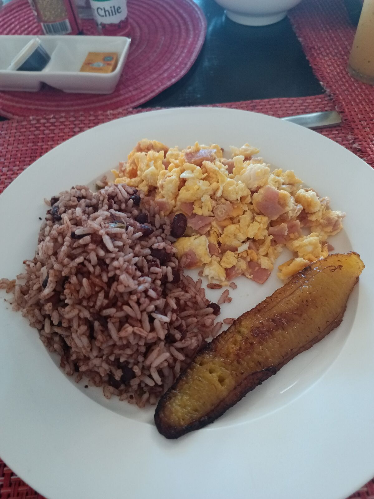
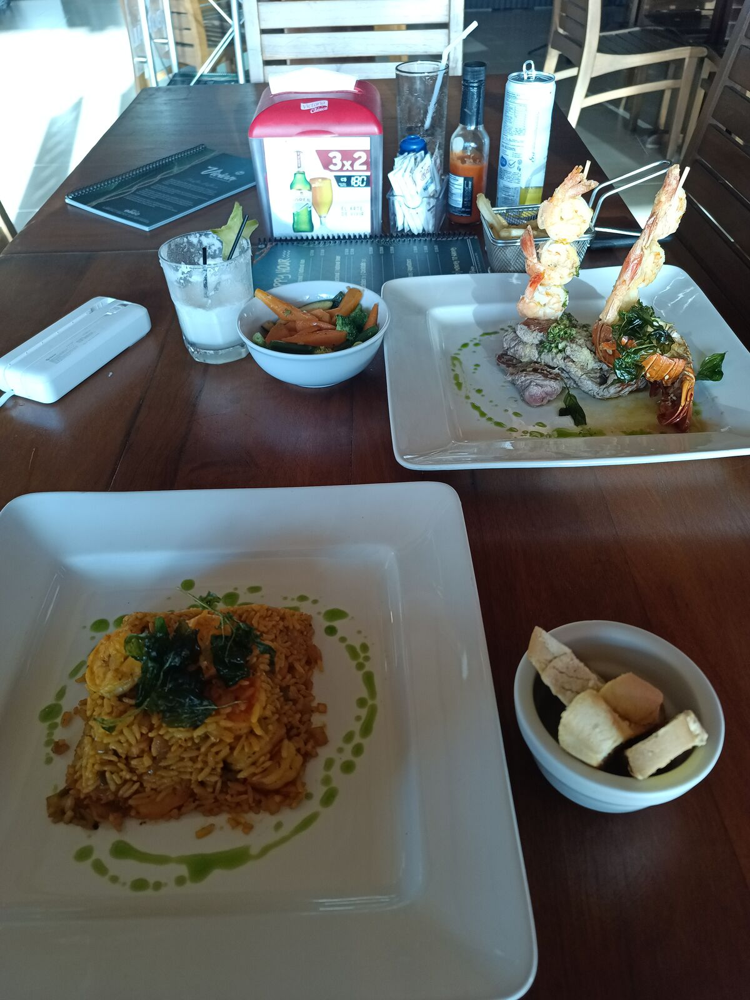
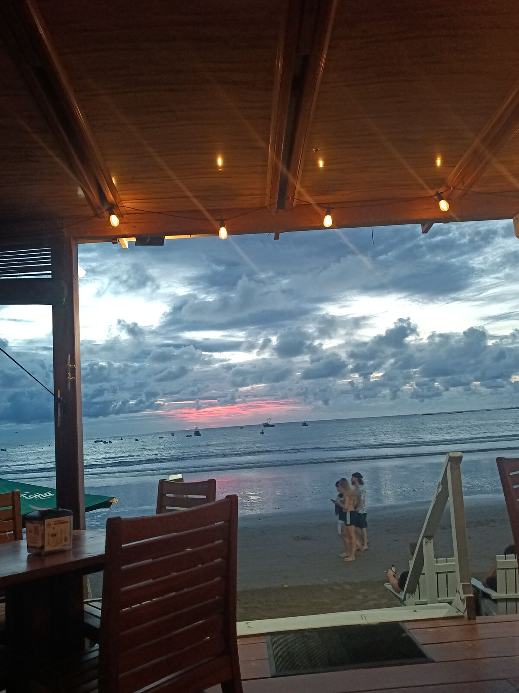
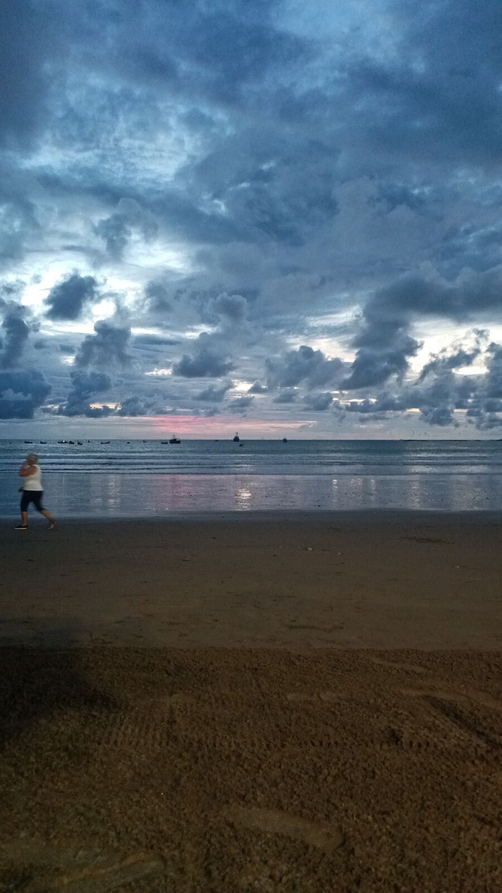

目的地是指引，不是判决
正如上一篇说的，我心里留下了一种奇怪的感觉。在 1bot 工作的时候，我很累，严重倦怠，最——重要的是，什么都不想做了。搬去克萨尔特南戈（Xela）救了我的命，因为那是一种和一切断开的方式。四年后，我看到那些原本存在却没有推进的事情，但也看到了自己：经验更多了，劲头更足了，也更懂游戏规则了。
在 1bot 工作的时候，我过得很开心、很幸福，那是我当年参与创办的一个创业项目。这正是我和何塞聊过的话题：什么时候才能说“这是我联合创办的”或者“那是我创办的”？“我们几个人一起做的”“我一个人做的”和“我花钱请别人做的”之间，界线在哪里？

我们一致认为，投入的程度和投资都是联合创始人身份的一部分，而且不只是钱：还有时间、热爱和大量的耐心，才能把东西做出来。最重要的是，所有参与者之间要讲清楚。在 1bot 的事情上，因为没经验，我没讲清楚：我认为自己是联合创始人，但我们从来没写下来，每个人的看法都不一样。所以，如果你们已经有或者打算创办一家公司或创业项目，一定要把这件事讲清楚。像朋友一样谈，把它完全说明白，这样路会好走得多，哪怕将来要各奔东西。
我提起这个，是因为有一次开会，有人问我：“我们该往哪个方向走？”。那时我负责技术。我管教育这块、教程和课程；我设计了要用的课程大纲初稿，组建了执行团队，研究平台、用户等等。我不是领导，而且当时我的想法很死板：在上面当领导的人什么都要懂一点，但不必什么都亲自做。
于是我说：“听着，领导不是我的工作。我是那个把你的愿景变成现实的人。”我提议做一些更社区化的东西：社区无线网络，再把 ADA 带到没有网络的地方，让这些社区都连起来。ADA 是一个基于 Kolibri（一个非常好的开源学习管理系统）的跨平台项目，用本地服务器提供 Wi-Fi 和在线课程。这个想法很有野心，但非常技术化。当时 1bot 的愿景，是让接触不到机器人教育的孩子通过“买一捐一”的商业模式接触到它：一所私立学校买一套机器人套件，就能帮忙为一所公立学校负担同样的一套。这样，机器人教育就从私立走进了公立，不用白送，也不用从谁那里拿走什么，而且这个商业模式我们已经验证过，效果相当好。
我们聊了很久，我说：“听着，作为技术负责人，提出愿景不是我的事；那是你的任务、你的工作。你想往哪走，我负责把它做到。”我想，把决定方向的责任交给对方，对他来说太重了，于是开始有了距离，而且越来越难相处，直到辞职成了最好的选择。

不过那是另一个故事了。那时我们没有目的地，没有要到达的地方；我们有点像在黑暗中航行，没有可以追随的星星。那个创业项目还在运营：我离开了，搬了家，过了好几年，它才恢复了我们当初做事和转型的速度。这让我很高兴，但也让我想，如果我们当时有（甚至不是一个更好的方向，而是哪怕只有）一个方向，它会变成什么样。
这些天和何塞在一起——我认识他很久了，但现在我们俩都更有经验了——我意识到，一个知道自己要去哪里的领导者，和那些边走边临时决定方向的人，差别有多大。我的立场还是一样：帮忙到达那个方向。从一开始想法就很简单：在某个日期前到达哥斯达黎加。不需要更多。我们有工具：车、自行车，还有边骑边继续工作的电脑。（写着写着我发现自己已经染上了 ChatGPT 那种“不是 X，而是 Y”的写法 哈哈哈，说真的太可怕了。别再用 AI 写东西了，它让我们效率更低。）我做出了信念的一跃：从 Xela 搬到安提瓜，住进我奶奶家，离首都更近。星期六，旅程还没开始，我就已经开了 200 公里，星期天我们出发前往萨尔瓦多。
我和何塞有个默契：路上由他找住的地方，我的任务是把我们送到那里。有时候地图上看到一段适合骑车的好路，何塞就说：“你在这儿放我下来，我骑一段。”或者反过来：我看到路又漂亮又宽，就跟他说“这段你骑吧”或者“这段我来骑”，就这样一路走。何塞定目的地，但怎么到达由我们分担；不是平分，因为做不到，但有些天他多一些，有些天我多一些。

开车去圣胡安德尔苏尔的路上，我意识到这正是需要的东西。方向不对也没关系，因为可以改；重要的是朝某个点前进。正如费尔南多·比里所说：乌托邦在地平线上……它的用处就在于让我们前行。
不过，很多领导者死板到这种程度：只要不按他们说的做，在他们眼里就是错的。他们定下目的地后，通常做的是把别人逼进困境：不考虑别人想说什么，这段路本该是一场愉快的冒险，却只剩下交差，最后合作者纷纷辞职。我得说，强硬不一定是坏事，但领导时必须要有灵活性。
我做过不少项目；有的难一些，有的容易一些，但我的计划和角色一直是“解决问题的人”。有时出主意，有时亲自参与，但总是带着大家走向他们的方向，而这个方向会在项目推进中逐渐明确。在 Creabot，角色不一样了，因为作为合伙人，我要把公司带到“我”想去的地方、我想在的位置，以及我最能帮到客户的地方。这已经不是解决问题，而是划定方向，说：“危地马拉在科技和硬件行业必须这样做。”也正因如此，最近我受邀的不仅是技术讲座，还有提供建议、激励他人，甚至帮助制定法律，让电子产业在危地马拉成为真正的产业。
我和何塞知道，我们必须在特定时间内到达哥斯达黎加，但在这段时间里做什么，由我们自己决定。会有延误，也会有不知道怎么解决的事情，比如车险那件事，但我们确信没有什么能阻止我们。

所以我留给你们一个问题：你的方向是什么？你正在做什么来到达那里？
👆 点击地图上的任意一个点，即可阅读当天的章节。